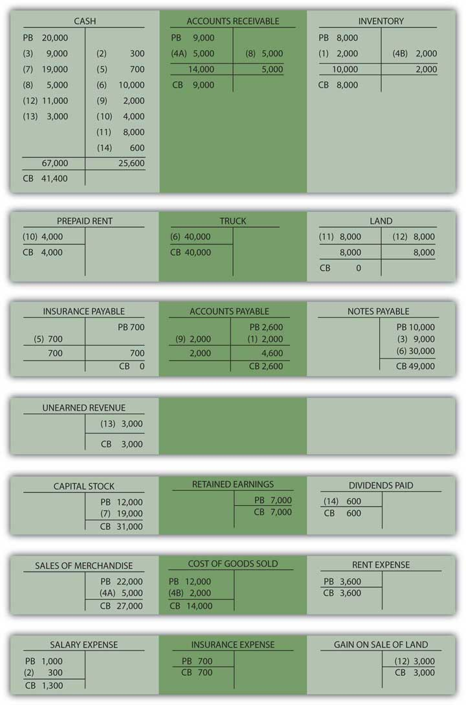

At the end of this section, students should be able to meet the following objectives:
Question: The Lawndale Company pays $700 for insurance coverage received over the past few months. In this case, though, the amount has already been recognized by the company. Both the insurance expense and an insurance payable were recorded as incurred. Thus, the amounts can be seen on the trial balance in Figure 4.3 "Balances Taken From T-accounts in Ledger". Apparently, Lawndale’s accounting system was designed to recognize this particular expense as it grew over time. When an expense has already been recorded, what journal entry is appropriate at the time actual payment is made?
Answer: Because of the previous recognition, the expense should not now be recorded a second time. Instead, this payment reduces the liability that was established by the accounting system. Cash—an asset—is decreased, which is shown by means of a credit. At the same time, the previously recorded payable is removed. Any reduction of a liability is communicated by a debit. To reiterate, no expense is included in this entry because that amount has already been recognized.
Figure 4.9 Journal Entry 5: Liability for Insurance Is Paid
Note that Journal Entries 2 and 5 differ although the events are similar. As discussed previously, specific recording techniques can be influenced by the manner in which the accounting system has handled earlier events. In Journal Entry 2, neither the expense nor the payable had yet been recorded. Thus, the expense was recognized at the time of payment. For Journal Entry 5, both the expense and payable had already been entered into the records as the amount gradually grew over time. Hence, when paid, the liability is settled but no further expense is recognized. The proper amount is already present in the insurance expense T-account.
Question: Assume that a new truck is acquired by the Lawndale Company for $40,000. Cash of $10,000 is paid now but a note payable—due in several years—is signed for the remaining $30,000. This transaction impacts three accounts rather than just two. How is a journal entry constructed when more than two accounts have been affected?
Answer: As has been discussed, every transaction changes at least two accounts because of the cause and effect relationship underlying all financial events. However, beyond that limit, any number of accounts can be impacted. Complex transactions often touch numerous accounts. Here, the truck account (an asset) is increased and must be debited. Part of the acquisition was funded by paying cash (an asset) with the decrease recorded as a credit. The remainder of the cost was covered by signing a note payable (a liability). A liability increase is recorded by means of a credit. Note that the debits do equal the credits even when more than two accounts are affected by a transaction.
Figure 4.10 Journal Entry 6: Truck Acquired for Cash and by Signing a Note

Question: Lawndale Company needs additional financing so officials go to current or potential shareholders and convince them to contribute cash of $19,000 in exchange for new shares of the company’s capital stock. These individuals invest this money in order to join the ownership or increase the number of shares they already hold. What journal entry does a business record when capital stock is issued?
Answer: The asset cash is increased in this transaction, a change that is always shown as a debit. Capital stock also goes up because new shares are issued to company owners. As indicated in the debit and credit rules, the capital stock account increases by means of a credit.
Figure 4.11 Journal Entry 7: Capital Stock Issued for Cash
Link to multiple-choice question for practice purposes: http://www.quia.com/quiz/2092643.html
Question: In Journal Entry 4A, a sale was made on credit. An account receivable was established at that time for $5,000. Assume that the customer now pays this amount to the Lawndale Company. How does the collection of an amount from an earlier sales transaction affect the account balances?
Answer: When a customer makes payment on a previous sale, cash increases and accounts receivable decrease. Both are assets; one balance goes up (by a debit) while the other is reduced (by a credit).
Figure 4.12 Journal Entry 8: Money Collected on Account
Note that cash is collected here but no additional revenue is recorded. Based on the requirements of accrual accounting, revenue of $5,000 was recognized previously in Journal Entry 4A. Apparently, the revenue realization principle was met at that time, the earning process was substantially complete and a reasonable estimation could be made of the amount to be received. Recognizing the revenue again at the current date would incorrectly inflate reported net income. Instead, the previously created receivable balance is removed.
Question: In Journal Entry 1, inventory was purchased on credit for $2,000. Assume, now, that Lawndale makes payment of the entire amount that is due. How is a cash outflow to pay for inventory previously acquired shown in a company’s journal?
Answer: Inventory was bought at an earlier time and payment is now being made. The inventory was properly recorded when acquired and should not be entered again. The merchandise was only obtained that one time. Here, cash is reduced (a credit). The liability set up in Journal Entry 1 (accounts payable) is removed by means of a debit.
Figure 4.13 Journal Entry 9: Money Paid on Account
Question: Company officials like the building that is being used for operations and decide to rent it for four additional months at a rate of $1,000 per month. An immediate payment of $4,000 is made. This cost provides a future economic benefit for the company rather than a past value. Recognition of an expense is not yet appropriate. What is recorded when rent or other costs such as insurance or advertising are paid in advance?
Answer: Cash is decreased by the payment made here to rent this building. As an asset, a reduction is reported in cash by means of a credit. However, this rent provides a future value for Lawndale Company. The cost is not for past usage of the building but rather for the upcoming four months. Therefore, the amount paid creates an asset. The probable economic benefit is the ability to make use of this facility during the future to generate new revenues. When the $4,000 is initially paid, an asset—normally called prepaid rent—is recorded through a debit.
Figure 4.14 Journal Entry 10: Money Paid for Future Rent
Note that this company does not record the building itself as the asset because it does not gain ownership or control (beyond these four months). The payment only provides the right to make use of the building for the specified period in the future so that a prepaid rent balance is appropriate.
Before this illustration of typical journal entries is completed, four additional transactions will be examined. In total, these fourteen provide an excellent cross-section of basic events encountered by most businesses and the journal entries created to capture that information. Coming to understand the recording of these transactions is of paramount importance in mastering the debit and credit rules.
Question: Officials of the Lawndale Company decide to buy a small tract of land by paying $8,000 in cash. Perhaps they think the space might be used sometime in the future as a parking lot. What is recorded to reflect the cash purchase of a plot of land?
Answer: The transaction here is straightforward. As an asset, land increases with a debit. Cash goes down because of the acquisition and is recorded using a credit. As stated previously, Venetian merchants would probably have made the same recording five hundred years ago (although not in U.S. dollars).
Figure 4.15 Journal Entry 11: Land Acquired for Cash
Question: Now, assume that—at a later time—this same piece of land is sold to an outside party for cash of $11,000. A sale occurs here but the land is not inventory. It was not bought specifically to be resold within the normal course of business. Selling land is not the primary operation of the Lawndale Company. Should revenue be recorded along with cost of goods sold when land is sold? These accounts are used in journalizing the sale of inventory. Does the same reporting apply to the sale of other items such as land or equipment?
Answer: Because the sale of land is not viewed as a central portion of this company’s operations, neither revenue nor cost of goods sold is reported as in the sale of inventory. An $11,000 increase in cash is recorded along with the removal of the $8,000 cost of the land that was conveyed to the new buyer. However, to alert decision makers that a tangential or incidental event has taken place, a gain (if the sales price is more than the cost of the land) or a loss (if the sales price is less than cost) is recognized for the difference. The effect on net income is the same but the reporting has changed.
Often, the resulting gain or loss is then separated from revenues and expenses on the company’s income statement to more clearly communicate information as to the nature of the transaction. Consequently, neither revenue nor cost of goods sold is found in the entry below as was shown above in Journal Entries 4A and 4B.
Figure 4.16 Journal Entry 12: Land Sold for Cash in Excess of Cost
Link to multiple-choice question for practice purposes: http://www.quia.com/quiz/2092628.html
Question: Accrual accounting, as specified in the revenue realization principle, mandates that revenues should not be recognized until the earning process is substantially complete. Assume a customer gives the Lawndale Company $3,000 in cash for some type of service to be performed at a future date. The work has not yet begun. Thus, Lawndale cannot report revenue of $3,000. How is a cash inflow recorded if it is received for work before the earning process is substantially complete?
Answer: Although the company collected money, accrual accounting dictates that revenue cannot yet be recognized. The earning process here will not take place until sometime in the future. As an asset, the cash account is increased (debit) but no revenue can be recorded. Instead, an unearned revenue account is set up to recognize the $3,000 credit. This balance is reported by the Lawndale Company as a liability. Because the money has been accepted, the company is obliged to provide the service or return the $3,000 to the customer. Recording this liability mirrors the company’s future responsibility.
Figure 4.17 Journal Entry 13: Money Received for Work to Be Done Later
Here is one final transaction to provide a full range of basic examples at this preliminary stage of coverage. Many additional transactions and their journal entries will be introduced throughout this textbook, but these fourteen form a strong core of typical events encountered by most businesses.
Question: Assume that the Lawndale Company has been profitable. As a result, the board of directors votes to distribute a cash dividend to all owners, a reward that totals $600. Payment is made immediately. What recording is appropriate when a dividend is paid?
Answer: Cash is reduced by this distribution to the company’s owners. As an asset, a credit is appropriate. The cause of the decrease was payment of a dividend. Hence, a dividends paid account is established. According to the debit and credit rules, dividends paid is listed as one of the accounts that increases through a debit. Thus, the recording of this last illustration is as follows.
Figure 4.18 Journal Entry 14: Dividend Distributed to Owners
Question: With practice, obtaining an understanding of the rules for debits and credits is a reasonable goal. However, these journal entries do not provide the current balance of any account. They record the effect of each transaction but not the updated account totals, figures that could change many times each day. How does an accountant determine the current balance of cash, inventory, rent expense, or the like?
Answer: In an accounting system, the recording process is composed of two distinct steps.
Historically, posting the individual changes shown in each journal entry to the specific T-accounts was a tedious and slow process performed manually. Today, automated systems are designed so that the impact of each entry is simultaneously recorded in the proper T-accounts found in the ledger.
For illustration purposes, the journal entries recorded above have been posted into ledger T-accounts shown in Figure 4.4 "Journal Entry 1: Inventory Acquired on Credit". Each account includes the previous balance (PB) found in the trial balance shown in Figure 4.3 "Balances Taken From T-accounts in Ledger" at the start of the illustrated transactions. The additional debits and credits recorded for each of the fourteen sample transactions include the number of the corresponding journal entry for cross-referencing purposes. The debit and credit sides of each account can be summed and netted at any point to determine the current balance (CB).
Figure 4.19 Lawndale Company Ledger
Initial coverage of the recording of basic transactions is concluded here through analysis of the payment of insurance, the contribution of capital, the purchase and sale of land, the receipt of cash prior to work being performed, the payment of dividends to owners, and the like. After the impact of each event is ascertained, debits and credits are used to record these changes. These journal entries are then posted to the appropriate T-accounts used to monitor ever-changing account balances. All the T-accounts are collectively known as a ledger or general ledger. Journal entries document the effect of transactions. T-accounts and the ledger maintain the current balance of every account.
Following is a continuation of our interview with Kevin G. Burns.
Question: When you were a college student majoring in accounting, you learned all the debit and credit rules as well as about journal entries and the general ledger. In your years as an investment advisor, has this knowledge ever proven to be helpful to you and your career?
Kevin Burns: Although I never planned to be an accountant when I was in college, I found the internal logic of the debit and credit rules quite fascinating. Thinking through transactions and figuring out the proper recording process was a great introduction to business operations. In all honesty, as an investment advisor, I am more interested in asset values and other balance sheet information than the accounting process necessary to gather this information. However, I also happen to own a restaurant and I always find it interesting when I dig through the specific expense accounts looking for ways to be more efficient. For instance, recently when I saw that we had spent a lot of money last year on building maintenance, I could not imagine how that was possible. I dug through the T-account myself and found a recording error that needed to be fixed. My background allowed me to understand the entire process. Frequently, as I study the various debits within our expenses, I am able to spot areas where the restaurant can save money.
Joe talks about the five most important points in Chapter 4 "How Does an Organization Accumulate and Organize the Information Necessary to Prepare Financial Statements? ".